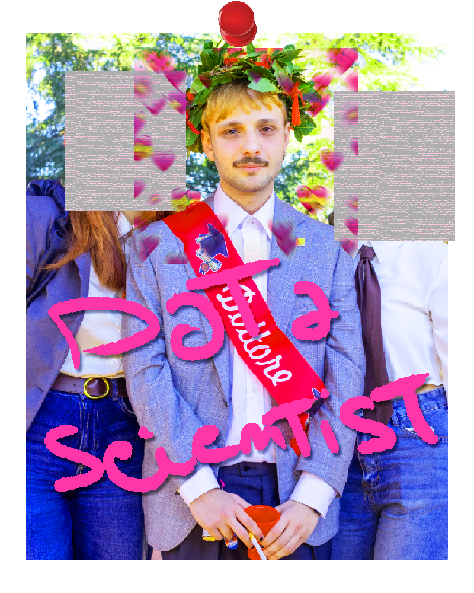
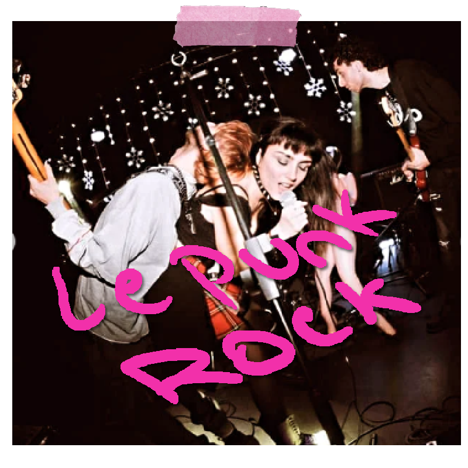
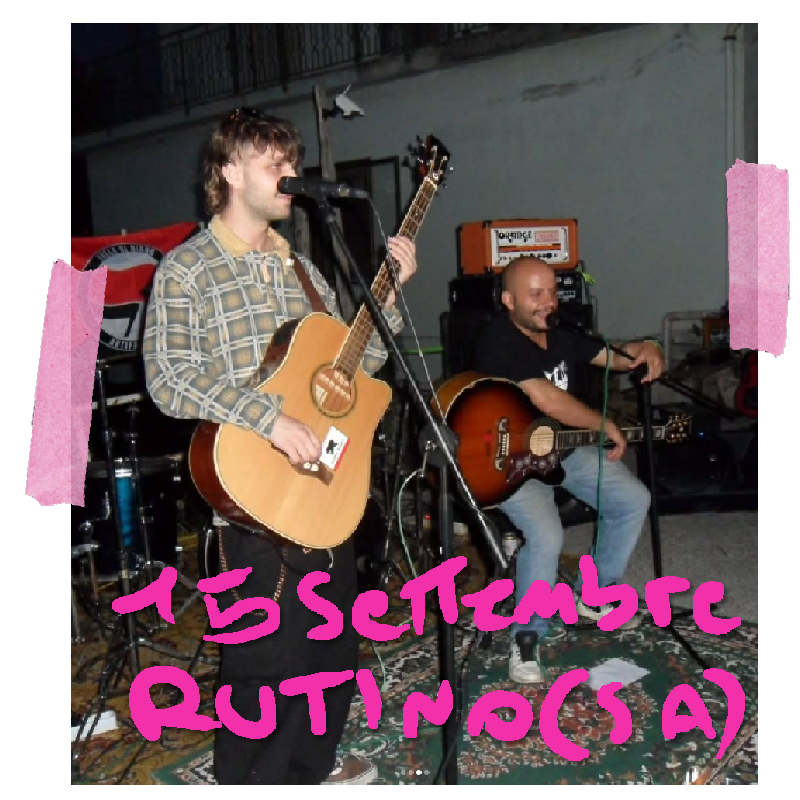
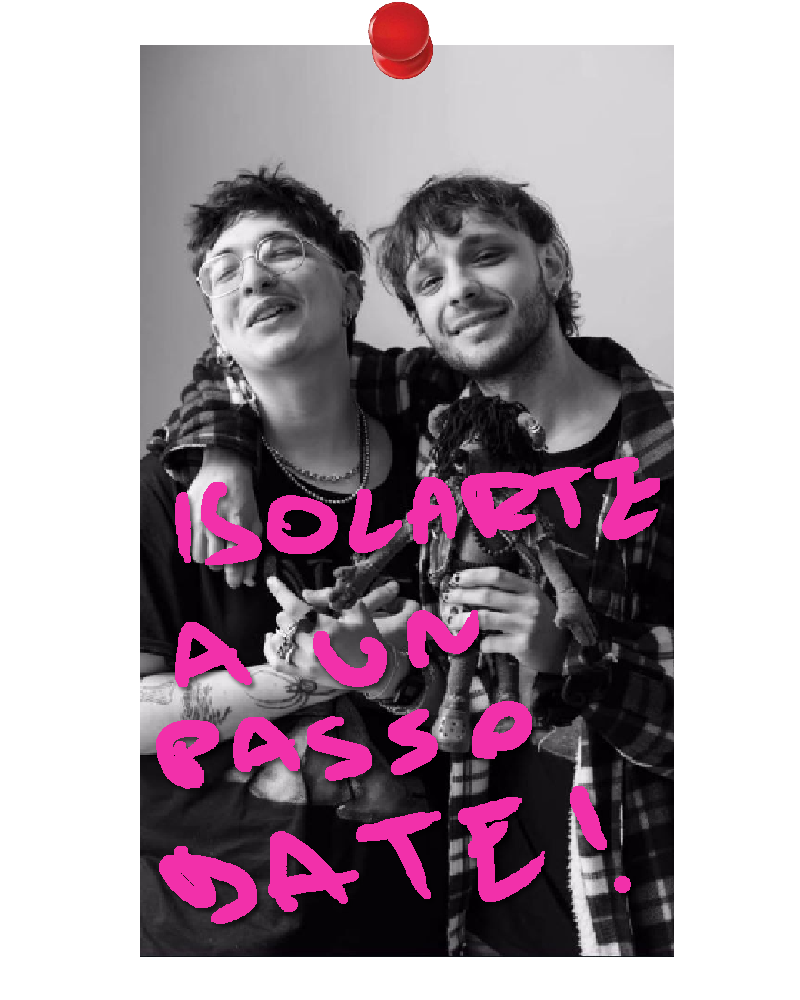
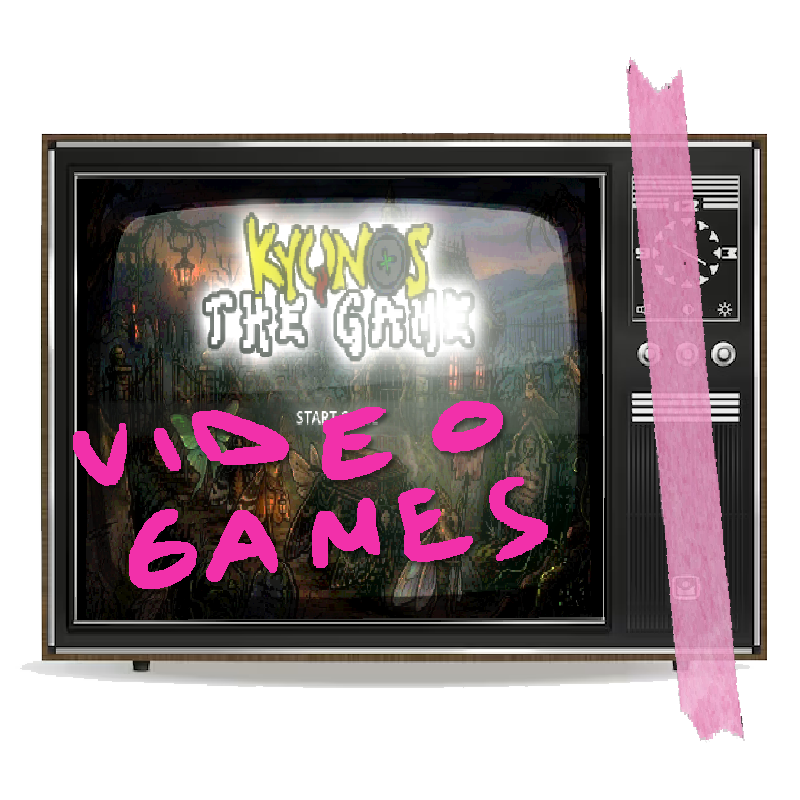

dephiuciur (Marco)
Nato a Cosenza nel 2002, Acquario di Gennaio. Videomaker, bassista, co-founder di Isolarte e sviluppatore quando serve.
Statistica per l'azienda (ma nulla di serio)
Laureato nel 2025 all'Unical con una tesi sulla creazione e implementazione di un database gestionale per un recovery center per animali selvatici. Ho lavorato come tirocinante curriculare per Internet e Idee Srl curando un progetto specifico sull'anticorruzione.
"Da quest'inizio può sembrare che passi le mie giornate davanti a computer grigi a guardare numeri e big data scorrere come i pazzi... ma..."

Videomaker
Monto video da quando ero ragazzino: da piccolo avrei voluto fare lo YouTuber. Negli anni ho lavorato per progetti privati, collaborazioni con amici e commissioni professionali tra regia, montaggio e color correction.
Artico — Territorial Pissings (Cover)
Apri su YouTube ↗2D FX Animator ShowReel
Montaggio e ritmo visivo dedicato al reel di presentazione per un'amic* animatore 2D FX.
Corti Sven
Serie di clip e contenuti visuali curati per l'identità del gruppo Sven.
Guarda su Instagram ↗Bassista & Compositore
Ho iniziato a suonare il basso nel post-Covid: l'idea di emulare i miei artisti preferiti mi galvanizzava. Dalla composizione di riff grezzi alle prove in cantina fino al palco.

Sven
@Sven.cu.mammata ↗Il gruppo creato insieme ai miei amici. Basso distorto, composizione collettiva e attitudine diretta.

Jovo
Collaborazione musicale dal vivo e in studio: sessioni, arrangiamenti e live condivisi.
Co-Founder di Isolarte
Insieme a 2 compagn* ho avuto l'onore di fondare il progetto Isolarte. I miei compiti sono prevalentemente organizzativi e di pubbliche relazioni: trovare gli artisti, parlare con i referenti degli eventi e far quadrare i conti affinché il progetto sia sostenibile e indipendente.
Allo stesso tempo è stata l'occasione ideale per togliermi parecchie velleità artistiche tra grafica, concept e iniziative dal vivo.


Kyunos: The Game
Game designer e programmatore del videogioco promozionale per la band Hunos, basato sulla loro mascotte ufficiale. Sviluppato interamente con Godot Engine (GDScript/Python).
Web Design Artigianale
Ho scritto e sviluppato interamente questo sito web <<<<33333.
Hostato su GitHub • Scritto in puro HTML semantico, TailwindCSS & Alpine.js.